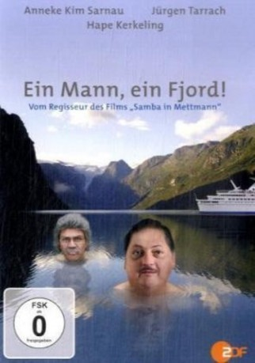

#2851 Ein Mann, ein Fjord!
 gesehen am 26.12.2015
gesehen am 26.12.2015
 
 IMDB-Wertung: 6.0 / 10
IMDB-Wertung: 6.0 / 10  Metascore: 0
Metascore: 0 
Eine rasante Komödie voller Missverständnisse: Norbert Krabbe aus Wanne, arbeitsloser Bürokaufmann und leidenschaftlicher Preisausschreiben-Teilnehmer, gewinnt einen Fjord auf den Lofoten. Aber wie kommt man bloß nach Norwegen - zum "Norbert-Krabbe-Fjord" samt eigener Blockhütte - wenn man pleite ist und einem schon beim S-Bahn fahren schlecht wird? Was Norbert an Geld fehlt, macht er durch originelle Ideen wett: Getarnt als Putzkolonne, schlägt er sich mit seiner Tochter per Zug bis Kopenhagen durch, weiter geht's als Tramper und mit ergaunerten Schiffstickets. Etliche abstruse Begegnungen später, u.a. mit Horst Schlämmer, Uschi Blum und dem stark riechenden Norweger Lars, der die Zukunft anhand eines Hunde-Quartetts voraussagt, erwartet Norbert an seinem Ziel die nächste Überraschung ...
Jahr: 2009
Dauer: 94 Minuten
FSK: 0
Land: Deutschland Studio: UFATonspuren:
Untertitel:
Auflösung: 720p (1280x720) Größe: 3430 MB
Genre: Komödie
Regisseur: Angelo Colagrossi
Drehbuch: Angelo Colagrossi, Angelo Colagrossi, Hape Kerkeling, Angelina Maccarone
Soundtrack:
Darsteller:
 Anneke Kim Sarnau als Birgit Krabbe
Anneke Kim Sarnau als Birgit Krabbe- Mads Hjulmand als Lars Högesund
- Horst Krause als Günter Reddemann / Ole
 Jürgen Tarrach als Norbert Krabbe
Jürgen Tarrach als Norbert Krabbe- Olga von Luckwald als Ute Krabbe
- Hape Kerkeling als Horst Schlämmer / Uschi Blum / Moderatorin Gisela
 Johanna Gastdorf als Waltraud Schwarz-Ebershagen
Johanna Gastdorf als Waltraud Schwarz-Ebershagen Matthias Brandt als Dr. Reinhold Schwarz-Ebershagen
Matthias Brandt als Dr. Reinhold Schwarz-Ebershagen- Petra Zieser als Ulrike Lange
- Hilmi Sözer als Kemal
- Wenche Myhre als 1. Rezeptionistin
- Beatrice Masala als 2. Rezeptionistin
- Uwe Rohde als Fahrkarten-Kontrolleur
- Dagmar Sachse als Bahn-Beamtin
- Gabi Decker als Reisebüroangestellte
- Martin Mölsted als Oslo Man in Car , uncredited
- Martin Ulbrich als Rezeptionist , uncredited
Datei: X:\2009(G-M)\Mann, ein Fjord!, Ein (2009, FSK0, 1280x720).mkv seit 25.12.2015
Festplatte: HD 2009(G-Z)-2010(A-F)
 Es gibt insgesamt 82 Filme in der Gruppe '2009(G-M)'
Es gibt insgesamt 82 Filme in der Gruppe '2009(G-M)'